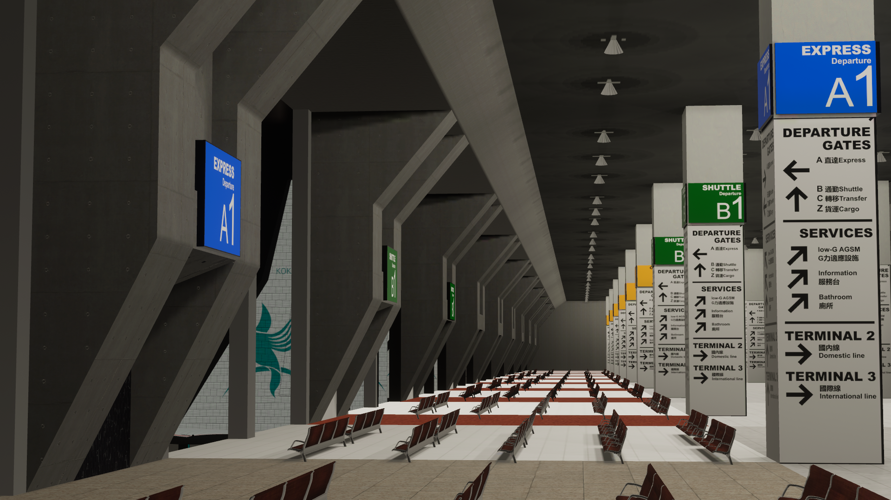
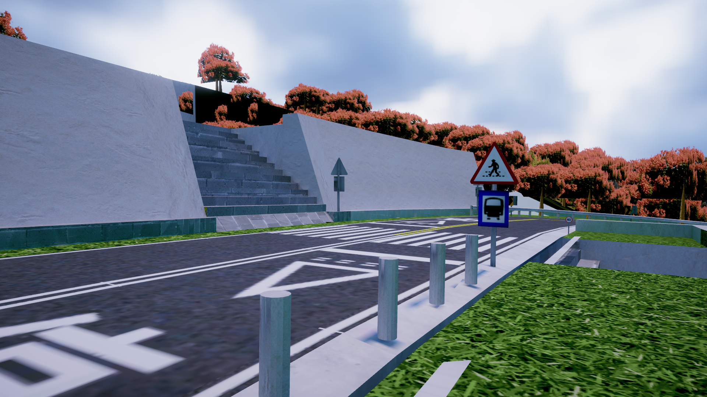
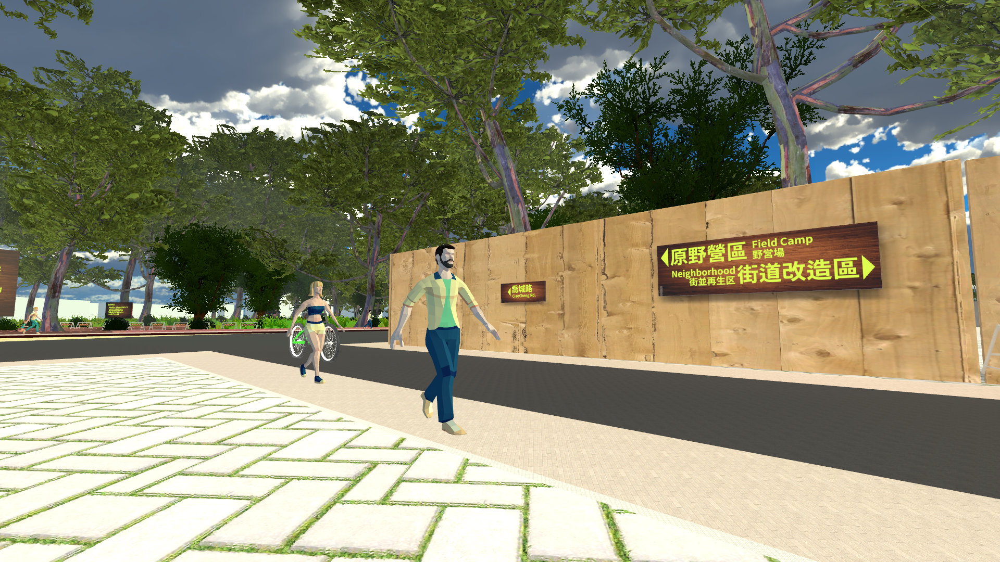
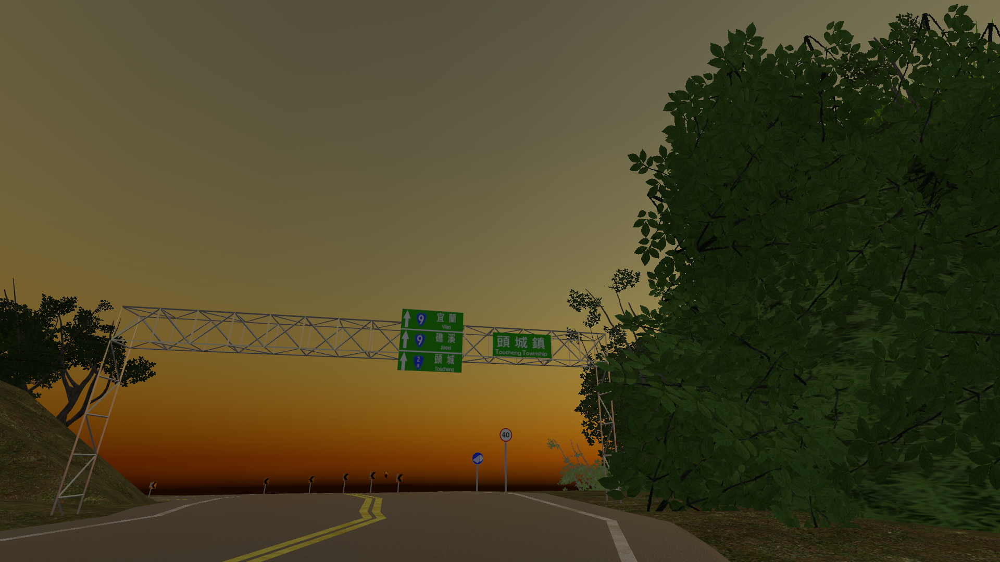
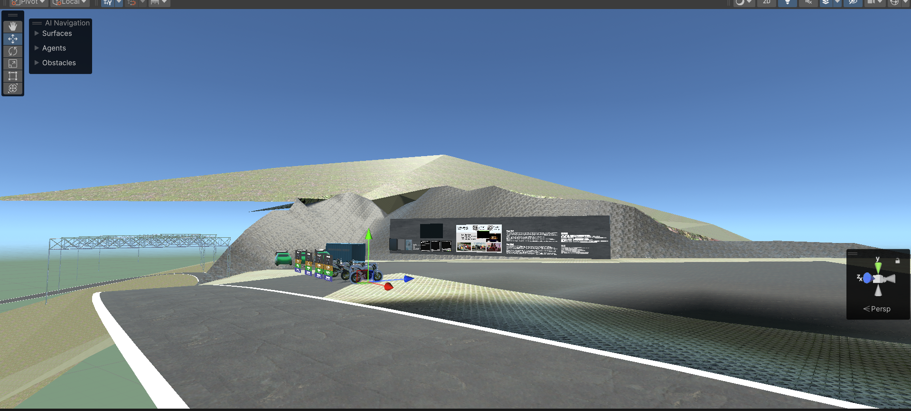

VR 環境設計、台灣地景數位孿生、沉浸式展覽空間。
以景觀空間語言，探索地誌保存與知識傳播。
VR environment design, Taiwan landscape digital twins, and immersive exhibition spaces. Using spatial language to explore preservation and science communication.
VR 環境設計、台湾地景のデジタルツイン、没入型展覧空間。空間言語を用いて、地誌保存と知識伝達を探求する。
VR 환경 디자인, 대만 경관 디지털 트윈, 몰입형 전시 공간. 공간 언어로 지리적 보존과 지식 전달을 탐구한다.
Diseño de entornos VR, gemelos digitales del paisaje taiwanés y espacios de exposición inmersivos. Explorando la preservación geodocumental y la comunicación del conocimiento a través del lenguaje espacial.
VR-medio-dezajno, Tajvana pejzaĝa cifera ĝemelo, kaj mergitaj ekspozicio-spacoj. Uzante spacan lingvon por esplori geodeziajn konservon kaj scion-komunikadon.





以 VRChat 為主要媒介，製作地景數位孿生、沉浸式展覽空間與互動社群世界。作品關注台灣本土地景的保存與再現，以及科學概念在空間中的轉譯。
Working primarily in VRChat to build landscape digital twins, immersive exhibition spaces, and interactive community worlds. Projects focus on preserving and re-presenting Taiwanese landscapes, and translating scientific concepts into spatial experience.
VRChatを主なメディアとして、地景デジタルツイン、没入型展覧空間、インタラクティブなコミュニティワールドを制作。台湾の地景の保存と再現、および科学概念の空間的転換に注目。
VRChat을 주요 매체로 경관 디지털 트윈, 몰입형 전시 공간, 인터랙티브 커뮤니티 월드를 제작. 대만 경관 보존과 재현, 과학 개념의 공간적 전환에 주목.
Trabajando principalmente en VRChat para construir gemelos digitales de paisajes, espacios de exposición inmersivos y mundos comunitarios interactivos. Los proyectos se centran en preservar y re-presentar los paisajes taiwaneses, y en traducir conceptos científicos en experiencia espacial.
Laborante ĉefe en VRChat por konstrui pejzaĝajn ciferajn ĝemelojn, mergitajn ekspozicio-spacojn kaj interagajn komunumajn mondojn. Projektoj fokusiĝas pri konservado kaj re-prezentado de Tajvanaj pejzaĝoj, kaj pri tradukado de sciencaj konceptoj en spacan sperton.
委託、合作邀約或任何詢問，歡迎聯絡。
Available for commissions, collaborations, and enquiries.
委託、コラボレーションのご依頼やお問い合わせはお気軽にどうぞ。
의뢰, 협업 제안 또는 문의 사항이 있으시면 연락 주세요.
Disponible para encargos, colaboraciones y consultas.
Havebla por komisioj, kunlaboroj kaj demandoj.